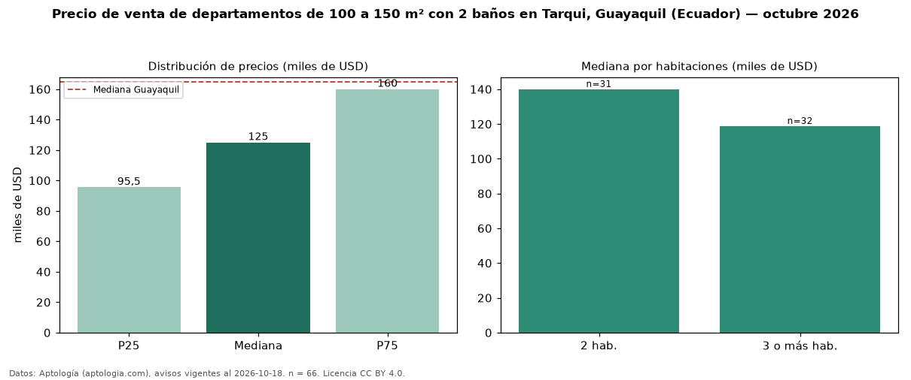

Precio de venta de departamentos de 100 a 150 m² con 2 baños en Tarqui, Guayaquil (Ecuador) — octubre 2026
Con 66 avisos vigentes, el precio mediano de departamentos de 100 a 150 m² con 2 baños en venta en Tarqui, Guayaquil (Ecuador) es USD 125.000. Eso es 7 % menos que la mediana de los departamentos de 100 a 150 m² en venta de Tarqui (USD 135.000, n = 148); este segmento reúne el 45 % de esos avisos. Por metro cuadrado, la mediana es USD 1.089/m² (n = 65), 5 % por debajo de los departamentos de 100 a 150 m² en venta de Tarqui (USD 1.145/m²). El área mediana anunciada es 116 m². El segmento con más oferta es el de 3 o más habitaciones (32 avisos, mediana USD 118.750); pasar de 2 habitaciones a 3 o más habitaciones cambia la mediana −15 %. La mediana de todos los departamentos en venta de Guayaquil es USD 165.000 (−24 % de diferencia). La mitad central de los avisos va de USD 95.500 a USD 160.000 (razón 1,7), una dispersión moderada. Datos: Aptología (aptologia.com), CC BY 4.0 — https://www.aptologia.com/ec/venta/guayaquil/tarqui. Archivos: PDF, CSV con las cifras y gráfica PNG.

| Avisos únicos | 66 |
|---|---|
| Percentil 25 | COP 95.500 |
| Mediana | COP 125.000 |
| Percentil 75 | COP 160.000 |
| Mediana por m² | COP 1.089 |
Fuente: avisos vigentes de portales inmobiliarios recopilados por Aptología, deduplicados (mínimo 30 avisos únicos por celda). Precios pedidos, no cerrados. Fecha: 2026-10-18.